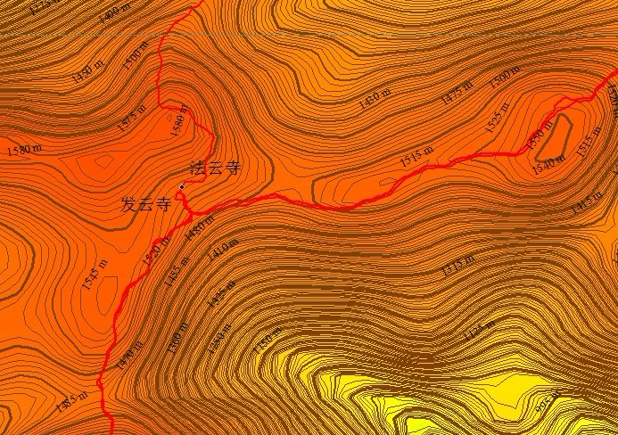

[转寄/推荐][转贴][删除][修改][设置可RE属性][上一篇][返回讨论区][下一篇][回文章][同主题列表][同主题阅读][从这里展开]
发信人: zhuobengang (卓本刚), 信区: outdoor
标 题: aster数据下载
发信站: 饮水思源 (2012年05月11日19:33:38 星期五)
最近又去看了看地图数据，aster DEM 数字高程地图数据已经可以下载了。网格精度30m，
垂直精度7m（理论）。格式依然为tif。之前我们的数据都是SRTM 数据 网格精度90m（理
论）。所以，在做地图的时候，用aster数据任然很不错的哦，通过武功山和太白山的比较
，aster在这方面精度要高一些
 screen.width - 200){this.width = screen.width - 200}">
|
[转寄/推荐][转贴][删除][修改][设置可RE属性][上一篇][返回讨论区][下一篇][回文章][同主题列表][同主题阅读][从这里展开]